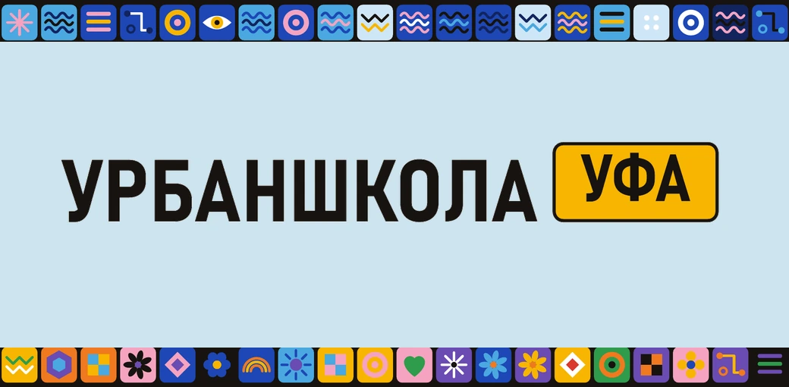

Урбаншкола
Методика развития пространственного мышления для школьников от 9 до 17 лет.

Территория глазами жителей
Урбаншкола учит видеть, как устроен знакомый район. На занятиях ребята восстанавливают по памяти свои маршруты, находят ориентиры и выясняют, что в одном и том же дворе важно разным людям.
Например, ребята рисуют район по памяти. Затем сравнивают карты и ищут три места, которые заметили почти все, и три места, которые запомнились только одному человеку.
Уфимский курс создан по мотивам венской методики «Was schafft Raum?». В нём 31 занятие и две учебные игры. Ребята сначала исследуют пространство вокруг себя, затем выясняют, кто пользуется общими местами и отвечает за них. На заключительных занятиях они обсуждают, как жители участвуют в решениях о будущем района.
Слушания в уфимском лицее
Команда «Мироселья» провела деловую игру для семиклассников Башкирского лицея № 136 имени М. Искужина в Уфе.
В рамках «Школы юного предпринимателя» ребята обсуждали застройку Сипайлово. Занятие прошло в формате городских слушаний.
Из города в село
Эти вопросы важны и для Верхних Терм. Кто будет приходить в мастерские? Как жители пользуются двором бывшей школы сегодня? Что стоит сохранить, если у здания появится новая жизнь? С такого разговора можно начинать работу над сельской территорией.